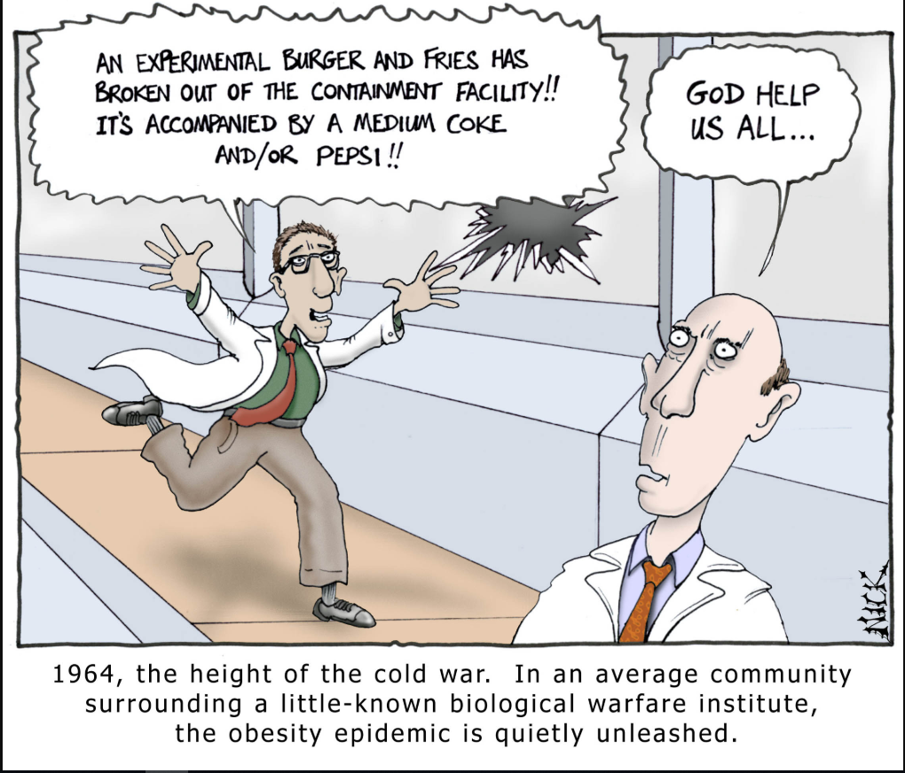

In turn-of-the-century pre-Bolshevik Russia, physiologist Ivan Pavlov rang a bell and fed his dogs frequently enough for them to associate the ringing of the bell with food. Eventually the dogs started to salivate every time they heard the bell—even if there was no food.
Eighty years later, psychologist Leann Birch reran Pavlov’s classic experiment, with a few twists. She and her team repeatedly gave preschool children snacks in a specific location where they would always see a rotating light and hear a certain song. They came to associate the light and the song with snack time and eating. One day, shortly after they had finished lunch, she turned on the light and played the song. Doggone it, they started eating again.17 But we don’t need lights and music to condition our children. We can powerfully do so with our words and behavior.
Dinosaur Trees, Rainforest Smoothies, Power Peas and Gullible Humans
Case Study 6 and 7
(excerpt from Mindless Eating, Chapter 8 - Wansink, 2006)
The Popeye project18 tried to understand why some children develop powerfully positive associations with healthy foods—such as broiled fish, broccoli, and even seaweed—that are not typically liked by most children. In beginning the work, the researchers conducted separate interviews with children and with their parents. These interviews took an abrupt right turn a couple of weeks after they began.
The researchers had expected that the children with positive associations toward healthy foods had “inherited” them from their parents. While true in many cases, in other cases, the parents didn’t leave this to chance. These parents explicitly associated the foods with a positive benefit—such as “spinach makes you strong like Popeye.” Some children grew up learning to love fish because their parents told them it would make them smart. Others were told to eat carrots so they could see far distances, bananas so they would have strong bones, and fruit so they could keep cool in the summer. A couple of children (whose parents were originally from China) even grew up eating—and loving—seaweed because they were told it would prevent “stomach sickness” (or, as their parents later clarified, goiters.)19 Hard to see that one as a big motivator to a four year-old. The first day of school would be one to remember: “Hi, I’m Jennifer. What I did on my summer vacation was go to the beach and eat seaweed so I can be goiter-free.”
These researchers had interviewed a couple hundred three- to five-year-olds in the Popeye Project and collected a lot of insights related to healthy eating—and some surprises. At one day-care center outside of Syracuse, New York, a number of the children had uncharacteristically strong preferences for broccoli. This caught their attention because this bitter vegetable is not as kid-friendly as others (such as carrots and peas). Many of the children told us they loved broccoli because their friends liked it or because it was “cool.” Most of these associations we could trace back to two little brothers. During interviews with the brothers both said broccoli reminded them of dinosaur trees, and they liked it because of that. This didn’t make much sense, but because of the far-reaching impact it seemed to have on the rest of the day-care group, the researchers interviewed their mother in person. They discovered she had convinced them that broccoli looked like a dinosaur tree and when they ate broccoli, they could pretend they were “long-necked dinosaurs eating the dinosaur trees.” At the dinosaur loving age of three and five, that was pretty cool, and it quickly became pretty cool to their friends.
Brainwashing, conditioning, or just a smart parent? Viva la brontosaurus!
Researchers in another lab tried to leverage this process with a vacation Bible School group a short time ago. The children could choose what they wanted from a lunch buffet, but each day the researchers would rename foods to give them better associations. For instance, when they renamed peas “power peas,” the number of children taking them nearly doubled. The most embarrassing poetic license the researchers took was with a V8-like vegetable juice. They ran out of it on the days they renamed it “Rainforest Smoothie.”
These associations can also work the other way around. Negative associations can be made with unhealthy foods. While there aren’t too many published studies on this, it’s an area rich with anecdotes.
Brian Wansink's research shows that we often eat for reasons other than hunger. With obesity on the rise in North America, we need to be mindful of why we are eating. For an alternative view on the obesity epidemic, checkout the comic below:
